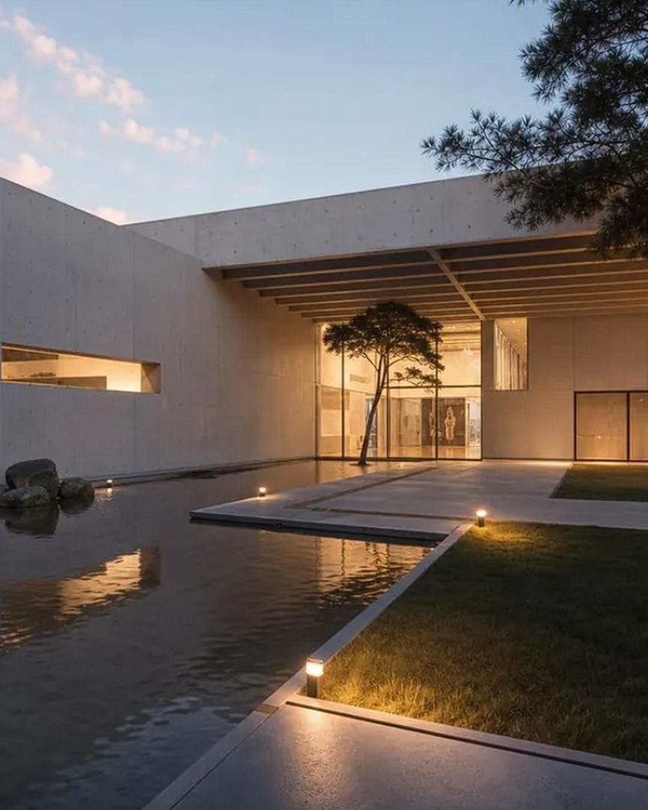

10월 축제 달력
주말 세 번이 이미 정해져 있어요
10.09 – 10.11
금 · 토 · 일
동구동락 축제
소제동 · 대동천 일원
10.16 – 10.18
금 · 토 · 일
대전콘텐츠페어
DCC 제2전시장
10.17 – 10.18
토 · 일
2026 대전빵축제
엑스포과학공원 한빛탑
8월 – 12월
상시
유성온날 YUON
유성구 · 10월을 놓쳐도 여기는 남아 있어요
이 장만 저장해두면 10월 일정 끝